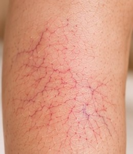
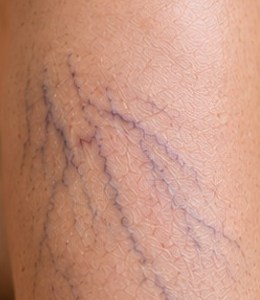
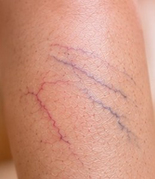
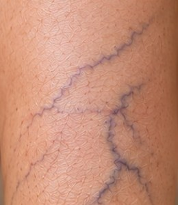
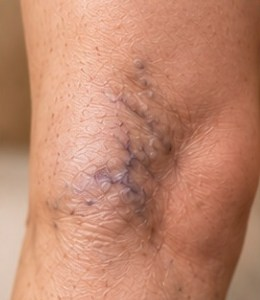
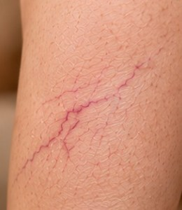

Entenda o problema
O que são vasinhos e varicoses?
Vasinhos são pequenos vasos finos, vermelhos ou arroxeados, logo abaixo da pele. As varicoses são veias um pouco mais calibrosas e azuladas, que costumam alimentar os vasinhos. Não doem, mas tiram a vontade de mostrar as pernas.
Aqui tratamos

Telangiectasias vasinhos finos
Vasinhos azulados
Vasinhos mistos
Varicose reticular
Varicose em rede
Vasinhos isolados
Não tratamos varizes. Veias grossas, dilatadas e esverdeadas precisam de avaliação com médico cirurgião vascular.
Quero pernas bonitas